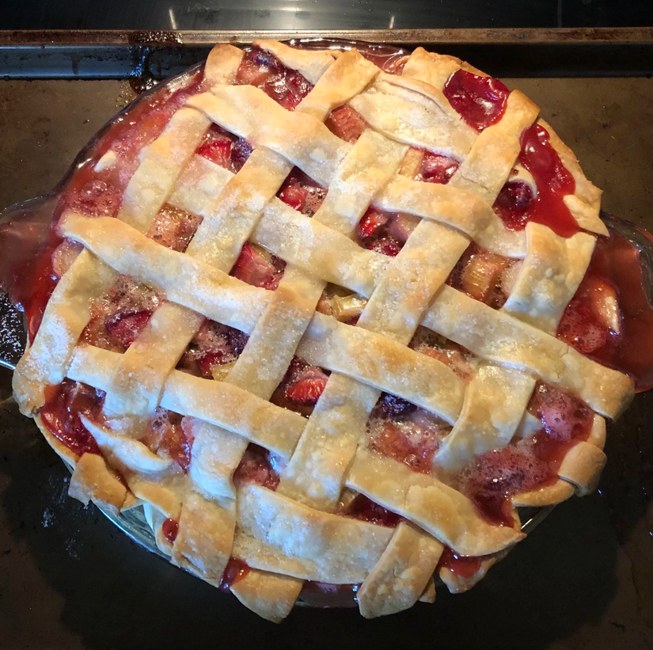

Strawberry Rhubarb Pie

Legendary fruity pie, sweet and tart berry flavor
Ingredients
- 1 cup white sugar
- ½ cup all-purpose flour
- 1 pound fresh rhubarb, chopped
- 2 pints fresh strawberries
- 1 recipe pastry for a 9 inch double crust pie
- 2 tablespoons butter
- 1 egg yolk
- 2 tablespoons white sugar
Directions
- Preheat oven to 400 degrees F (200 degrees C).
- In a large bowl, mix flour and sugar. Add strawberries and chopped rhubarb. Toss with sugar and flour and let stand for 30 minutes.
- Pour filling into pie crust. Dot top with butter, and cover with top crust. Seal edges of top and bottom crust with water.
- Apply yolk to top of pie, using a pastry brush. Sprinkle with sugar. Cut small holes in top to let steam escape.
- Bake at 400 degrees F (200 degrees C), for 35 to 40 minutes, or until bubbly and brown. Cool on rack.
Click here for more recipes.